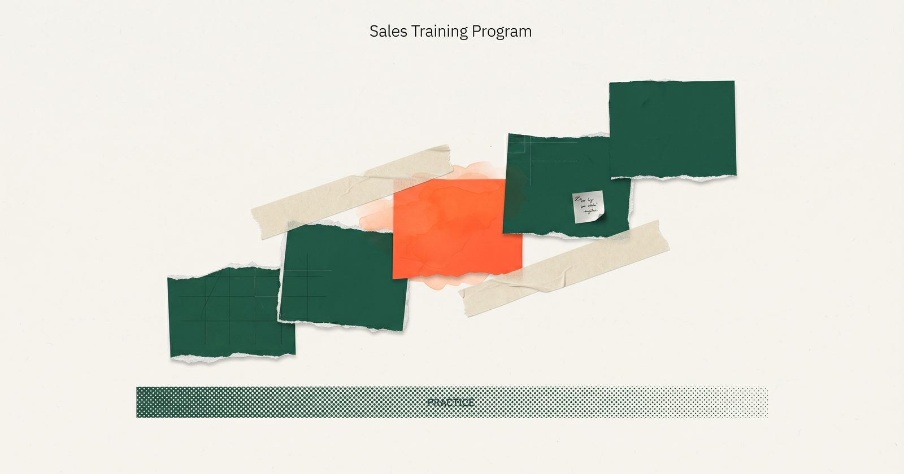
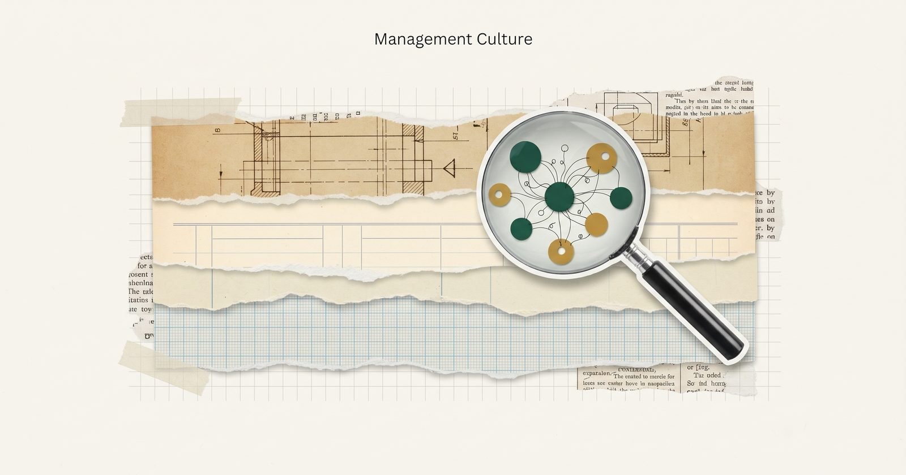
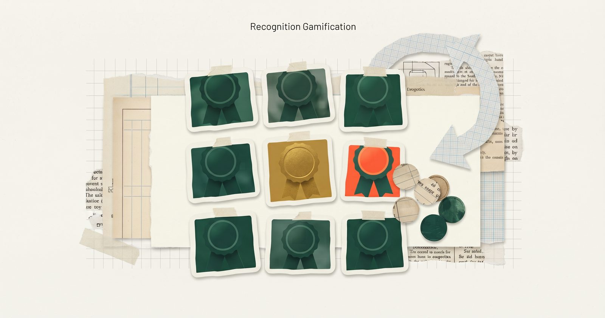

Результат важнее активности
Измеряю изменение поведения и бизнес-эффект, а не количество часов и «довольные лица» в отчёте.
Превращаю бизнес-стратегии в живые процессы, сильные команды и эффективное обучение. Фокусируюсь на работе с лидерами и управленческой культурой. Открыта к проектной работе и долгосрочным задачам — инхаус или приглашённый тренер.
Мой профессиональный фундамент — 9 лет в Сбере. Это была моя школа: высокие требования, сильные люди рядом и планка, которую держишь каждый день. Именно там я вживую увидела, как сильная и слабая корпоративная культура влияет на бизнес: на скорость решений, на удержание людей, на способность компании проходить изменения.
Задача → механика → результат. Компании и данные обезличены, материалов под NDA нет.

Скрипты превратились в живые диалоги, которые ведут клиента к следующему шагу.
Смотреть кейс →
Вместо «плохих сотрудников» — карта системных ограничителей и план развития руководителей.
Смотреть кейс →
Новички доходят до реальной работы и выходят на самостоятельность за 3 недели.
Смотреть кейс →
Признание не дублирует зарплату, а работает на вовлечённость и удержание.
Смотреть кейс →
Склад упал с 3-го на 18-е место из 18 за 3–4 недели — цена тихой незрелости руководителя.
Смотреть кейс →
Эмоциональная разгрузка распределённых команд без бюджета и «шариков-фонариков».
Смотреть кейс →Измеряю изменение поведения и бизнес-эффект, а не количество часов и «довольные лица» в отчёте.
Работаю с процессами, ритуалами, решениями и ролевыми моделями. Плакат ничего не меняет.
Диагностика без обвинений: описываю систему, которая производит поведение, и говорю на языке бизнеса.
Нейробиология, методология и управленческие модели — в понятных схемах, кейсах и решениях.
Каждое направление — про задачи бизнеса, механику работы и ценность результата, а не про список «услуг».
Коммуникация как продукт: с задачей, аудиторией, каналом и результатом. Не «рассылка для галочки», а управляемый диалог компании с людьми.
Культура — это то, что люди делают, когда никто не смотрит. Строю её через ритуалы, признание, события и понятные правила игры.
Веду обучение по полному циклу — от потребности до изменения поведения. Опираюсь на педагогический дизайн и принципы принятия решений: так, чтобы знание переходило в навык, а навык — в рабочий результат.
Смотрю на реальные процессы, а не на презентации о них. Нахожу ограничители, которые мешают команде выполнять цели, и перевожу их в план действий.
Скорость выхода новичка на результат и качество экспертного голоса компании — это управляемые процессы, а не удача.
Инхаус, приглашённый эксперт или передача методики команде. Выбор зависит от задачи и горизонта.
Погружаюсь в контекст и строю систему вдолгую.
Ключевые роли, где нужен человек, который держит культуру и обучение как единую систему.
Прихожу под задачу и оставляю результат и инструменты команде.
Когда нужен внешний взгляд, методология и запуск без раздувания штата.
Отдаю не сценарий, а работающую систему — под вашу компанию.
Что можно взять
Форматы передачи
Методика авторская. В том, что она сработает так же, — не обещаю: ценность именно в адаптации под ваш контекст. Объём и условия — по договорённости.
Реальные отзывы и сборные рекомендации из практики. Имена, компании и детали изменены.
«Надежда обучала меня продажам с нуля в цветочной компании. Благодаря её подходу, вниманию и заботе мне удалось легко адаптироваться в профессии и поверить в свои силы. В работе она была не просто руководителем, а настоящим наставником: умела поддержать, вдохновить, мотивировать и помочь не опускать руки даже в непростые моменты.
Именно благодаря Надежде я полюбила то, чем занимаюсь по сей день, — пусть теперь это уже не продажи, а профессия турагента. Она учила не теряться в сложных и конфликтных ситуациях, находить выход спокойно и с лёгкостью, а главное — находить индивидуальный подход к каждому человеку. Эти навыки оказались ценны не только в продажах, но и в работе с людьми в целом.
Искренне рекомендую Надежду всем, кто хочет не просто научиться продавать, а по-настоящему полюбить своё дело, раскрыть потенциал и поверить в собственные силы. Это наставник, который даёт гораздо больше, чем просто знания».
«В цифрах — индивидуальная конверсия менеджеров выросла от 40 до 150%. Команда наконец оказалась в едином информационном поле. Для меня как руководителя освободилось время на мотивацию и стратегию вместо мелкой возни».
«Надя умеет держать рамку результата и при этом не ломать людей. Она приходит с методологией, а не с готовым тренингом, и это чувствуется уже на диагностике».
«После воркшопа я впервые поняла, как давать обратную связь, не обесценивая человека. Команда стала приносить идеи, а не ждать указаний».
Расскажите контекст — команда, культура, обучение или аудит. Предложу формат, первый шаг и честно скажу, где я не лучший выбор.